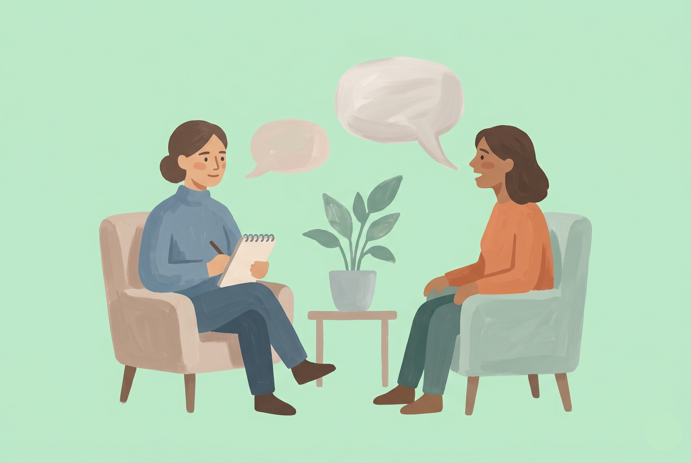
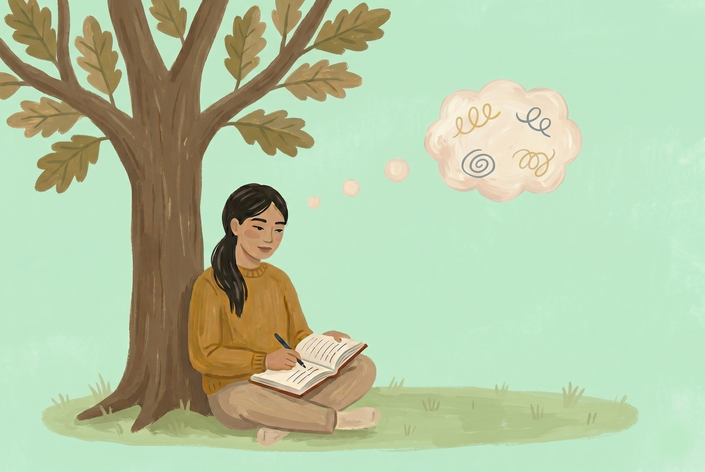
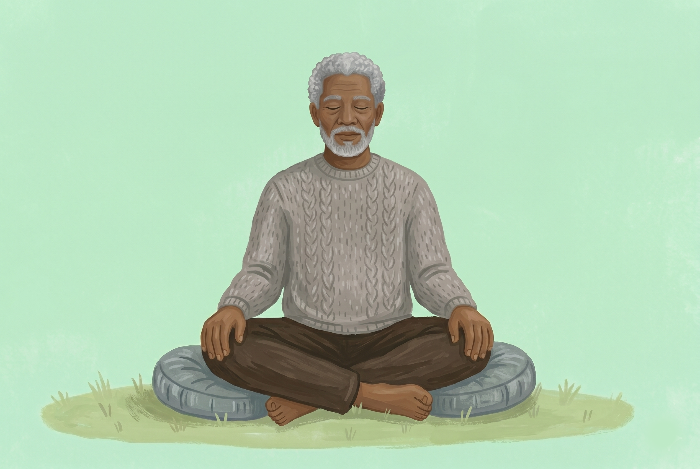

Talk & Mindfulness1:1 Talk Therapy
Personal sessions to gently work through stress, anxiety, and the everyday weight — using reflection, mindfulness, and evidence-based techniques.
Therapy at Nayrah isn't about labels or fixing what's broken. It's a slow, honest conversation — one where you set the pace, and we walk beside you.
"This is your space. You decide the pace, the direction, the dots, and the colours you pick. We are going to walk beside you — making sure it isn't a spiral, but a circle."
We keep our practice intentionally small so you get the time and attention this work deserves.

Talk & MindfulnessPersonal sessions to gently work through stress, anxiety, and the everyday weight — using reflection, mindfulness, and evidence-based techniques.
Psychology-grounded sessions to explore your strengths, untangle the noise, and build real confidence in what you choose next.

PsychoeducationCurious about mental health but not in crisis? Simple, friendly sessions on understanding your thoughts, emotions, and coping patterns.

Self-CompassionGuided sessions to slow down, reconnect with yourself, and find a quiet kind of balance — one that holds, even on the hard days.
Read about our therapists, their training, and the founders behind Nayrah.
Working with the team was life-changing. I finally felt heard and understood without judgment.
The space here is so warm and safe. I was hesitant about therapy, but it felt like a conversation with a trusted friend who has the tools to help.
I've learned so much about myself and my patterns. The coping strategies have made a real difference in my daily life.
Gentle yet powerful. They helped me connect the dots from my past to my present, which was incredibly enlightening.
A beacon of hope. The compassionate guidance and practical tools have transformed how I handle stress.
Working with the team was life-changing. I finally felt heard and understood without judgment.
The space here is so warm and safe. I was hesitant about therapy, but it felt like a conversation with a trusted friend.
I've learned so much about myself and my patterns. The coping strategies have made a real difference.
Gentle yet powerful. They helped me connect the dots from my past to my present.
A beacon of hope. The compassionate guidance has transformed how I handle stress.
Your first 50-minute session is on us. No paperwork, no pressure. Just a conversation.